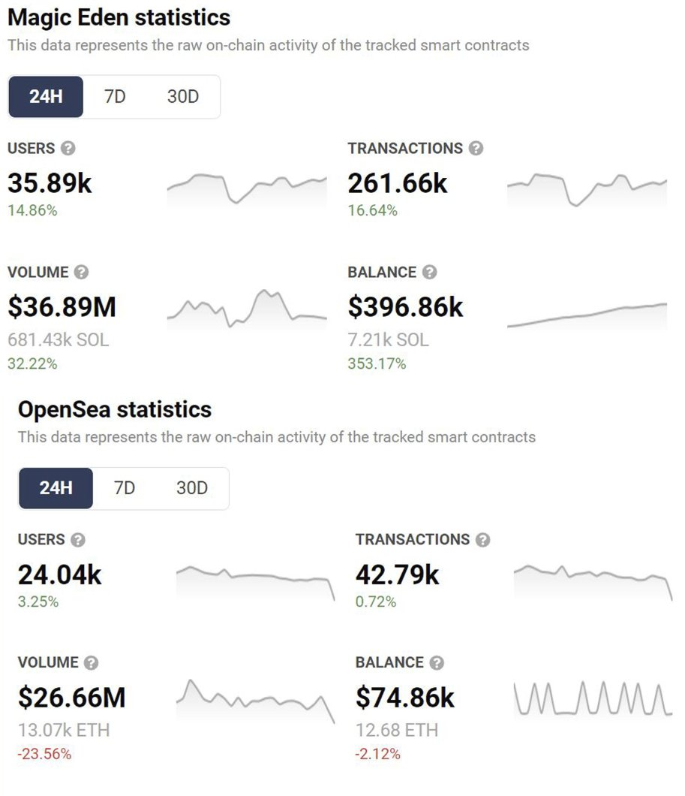
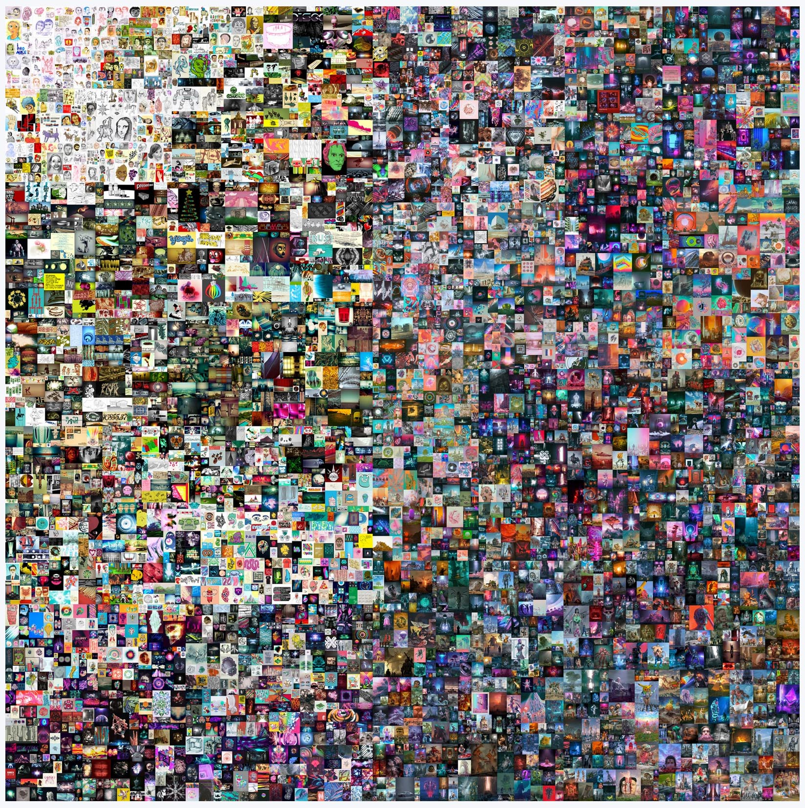
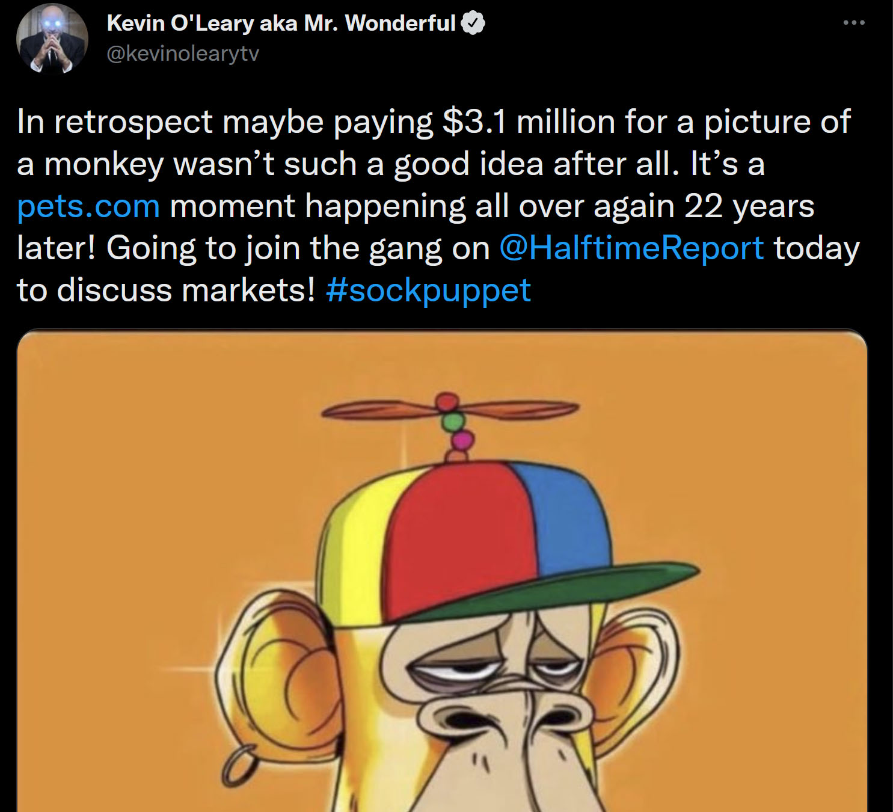

- automatically published
Digital Objects & NFTs
- Nonfungible tokens are a whole ‘class’ of digital token, separate and distinct from everything discussed to this point. They are generallyrecognised inlawas property in their own right.moringiello2021property; @fairfield2021tokenized In the Initial Coin Offering (ICO) and project tokens detailed earlier, and limitingthis description to the Ethereum network for now, a project launching anERC-20 token commits contract code to the blockchain, and this contractthen mediates the issuance and management of millions or billions oftokens associated with that project, and it’s use case.ERC-20is a fungible tokenissuance. Each of the projects’ tokens is interchangeable with any othertoken. They’re all the same from the point of view of the user.
- Rather than the ERC-20 contract type used for fungible token issuance, NFTs predominantly use the ERC-721 protocol on Ethereum (just different instructions). It’s the case that most NFTs in the 2021/2 hype bubble are algorithmically generated sets of themed art (so-called PFP-NFT). Tens of thousands of distinct tokens are ‘minted’, each one being a complex transaction commitment to the Ethereum blockchain, along with its associated gas fee. These minting events were much-hyped social occasions (before the 2022 market crash), and happened very quickly, with users clamouring to create art with randomly allocated features from the art schema associated with the project. Lucky winners could find themselves with an NFT art piece with more than an average number of ‘rare’ features. If the overall mint becomes more popular, then the secondary market for all of those mints goes up, and because of the liquidity premium, they can go up a lot. The perceived rarer mints go up a lot more. This whole process is very energy intensive on the chain, and the vast majority of these projects simply trend to zero value. In response to this appalling cost-benefit analysis, the Ethereum Foundation has proposed EIP-2309 to make minting NFTs more efficient. They say, “This standard lets you mint as many as you like in one transaction!”
- The Ethereum Foundation gives their somewhat constrained view of NFTs on their website and it’s a useful primer. On that page, they detail some of the use cases, as listed below, with a critique added:
- Digital content; this is the dominant use case right now. Much more on this later.
- Gaming items; again more on this later, it’s an obvious enough use case but complex politics in the intersection of games and crypto have stalled the adoption curve.
- Domain names; this is just starting to reach for applications now, why not a database with the ISP/host?
- Physical items; seemed like a clear over-reach as the transfer of the NFT does not imply the transfer of the object, but this is emerging as the growth use case.
- Investments and collateral; while this was an emergent option in the space, it’s likely been a bubble, as owners of the tokens cast around for additional liquidity, and loan businesses chased yield with higher risk. The recent implosion of lenders and funds in the crypto space was partly a function of supposedly world-class risk managers accepting jpegs as collateral.
- Moving away from Ethereum, NFTs can be minted on most of the other levelone chains. Solana is a great newcomer example. Sol is a terrible chainwith regards to decentralisation, but thanks to that it’s far cheaperand faster to mint NFTs on it, and it was becoming a troublingcompetitorfor Eth before the FTX ponzi scheme collapse destroyed it’s market value(Figure[fig:solnfts]).

- The same might be true for Cardano’s ADA, though ADA is struggling tohold onto it’s market position despite some technical advances. It’sworth reiterating here that the nature of these digital tools likelymakes for a ‘winner take all’ market dynamic over time. With fees beingcentral to this generative NFT use case it’s possible to see that highlycentralised, fast, and cheap chains will capture and eventually dominatethe space. Remember that this likely (game theoretic) outcome might aswell be a database running without the stark inefficiencies ofblockchain. The whole NFT space is a gamble on consumer enthusiasm forspending money continuing to outpace logic.
- Astonishingly, according to a JPMorgan insider market report (reportedon in apodcast),only around 2 million people have ever actually interacted with NFTs.One analysis suggests that a single entity accounts for 3 of the top 4holders, having made 32,000 ETH from the NFT boom. This suggests heavymarket manipulation and is far from the egalitarian landscape claimed inthe hype. Tellingly it’s thought around 10% of the tradingvolumeon market leading platform ‘Super Rare’ was by the now bankrupt venturecapital firm ‘Three Arrows’.
- With that said NFTs have clearly allowed digital and new mediaartiststo connect with audiences without gatekeepers. Established mediators andcurators of art have been caught totally wrongfooted, and NFTs seem togive a way for them to be cut out completely. There are suggestions ofapplications beyond this initial digital art scope. This is acompounding, and disrupting paradigm change.
Key use cases
Art
- The recent surge of interest in NFT’s during early 2021 has largely been driven by digital art NFT’s, despite the origins of digital art NFT’s started much earlier in 2014. New York artist Kevin McCoy’s Quantum is widely recognised as the first piece of art created as an NFT. However it was during early2021 that art NFT’s started to gain significant attention; by the end of2021, nearly £31b had beenspenton NFT purchases, a considerable and exponential growth given 2020sales ofasciitilde£71mHigh profile digital artists such as Beeple whose recent recordingbreaksaleof his NFT “The first 5000 days” (Figure[fig:first5000days])at Christies (a long established British auction house, specialising in high profile precious work of art) for £52.9m helped bring NFT’s into the public spotlight and wider give them global attention.

- Art as NFT’s offer the following advantages:
Immutable Nominal Authenticity
- Art fraud such as false representation, forgeries, plagiarism have beena reoccurring blight since art has existed; artists and works of arthave been open to abuse by forgers, black market profiteers and evenfellow artists laying claim to works of art of others. Unless a work ofart is sold, exhibited or listed, documenting when and who created it,the nominal authenticity, which Dutton states as the “correctidentification of the origins, authorship, or provenance of anobject”dutton2003authenticity can be increasingly mutable over aperiod of time, dependent on a multitude of factors, including; theartists existing profile, how widely and where the work of art isexhibited, if the work of art is commissioned by a patron, if it’s sold,and profile of the buyer/collector. At its most basic level, once a workof art is ‘minted’ as an NFT (publishing the art work as a unique tokenon the blockchain) this functions as an immutable publicly accessibleproof of ownership and by extension proof of creation. The act ofminting is not purely limited to digital art; all an artist requires isa digital representation of any physical art (sculpture, physicalpainting, installation etc..) which can be used as a proxy allowingartists to record the date of creation/origin of a physical piece of arton the blockchain, a buyer purchasing the NFT can be provided the actualphysical artwork as part of the NFT. Nominal authenticity becomes secureand immutable for the lifetime of the blockchain (by no means assured).
Secure Digital Provenance
- Provenance (or the chain ofcustody) is an important aspect in works of art, antiques andantiquities. Provenance not only helps assign work to an artist but alsodocuments ownership history. Digital provenance, an inherent feature ofNFT’s means provenance now no longer becomes what has historicallysometime been a contentious detective’s game at the best of times; onethat is open to fraud, misinterpretation and entirely reliant on goodrecord keeping.
- Since provenance can contribute to the value of a piece of art(benefiting both the creator and collector) the use of the blockchain asan open, secure ledger is a far more trustworthy system than traditionalmethods of artistic provenance that were cobbled together; oftenconsisting of a mix of physical and digital documents spanning private &public sale receipts, art/museum gallery exhibitions and private recordkeeping). Digital provenance provided when an artist ‘mints’ a piece ofart into an NFT allows artists and collectors to record a secure,permanent unalterable history of transactions for a specific piece ofart, providing future collector complete trust in the origin and custodyof a piece of art.
Decentralised automated royalty payments
- Traditionally if a piece of art is sold, the first sale may (but notalways) benefit the artist financially, however secondary and anysubsequent sales would only ever financially benefit thebuyer/collector; the original artist would rarely benefit. However If awork of art is minted into an NFT, royalty payments can be predeterminedand automated in perpetuity directly by the use of a ‘smart contract’.Smart contracts are small, automated scripts/programs that runautomatically and independently of a buyer/seller; pre-determinedconditions are set by the buyer; these trigger when certain conditionsare met i.e. These cannot yet be enforced “on chain” and the NFT auctionhouses online have engaged in a race to the bottom and stopped enforcingroyalty payments through their systems. This element might not even bepossible, though there is some hope that we could enable this in thecomplex logic offered by the RGB protocol.
On sale transfer
- 20% of total sale amount into digital wallet of the creator. 80% oftotal sale amount into digital wallet of the seller.
- Once the royalty payment rate is set by the artist/creator, futureroyalties of all sales can be paid directly to the artist/creatoraccount (via a digital wallet) without the need of a third party(traditionally a gallery/agent etc..).
- Smart contract driven NFT’s means that even if piece of art is resold 5,10 or even a 100,000 times moving through 5, 10 or even a 100,000different collectors; a pre-determined royalty payment rate set by thecreator would still guarantee the artist/creator is paid directly fromeach and every future sale.
- Historically provenance for works of art may span across generations,for instance Gabriël Metsu’s oil on canvas painting The Lace Maker’sprovenance, first recorded in 1722, now spans 300 years of ownership,including from a British Baron in the 19superscriptth century to anAmerican philanthropist in the 20superscriptth century.) Metsu diedyoung at the age of 38, leaving a widow; neither his/herrelatives/descendants benefit from his original work, 300 years laterthis would be near impossible to facilitate with traditional systems, aseven legal contracts are open and prone to the ravages of time.
- NFT smart contracts hold an incredibly potential; an artists descendantsfinancially benefiting directly from the resale of a piece of work longafter the artist/museum’s/gallery or even state have turned to dust aslong as the original creator’s digital wallet is accessible, theblockhain becomes an everlasting digital patron ensuring
- NFT art currently suffers from the same failure of decentralisationalready discussed in the Ethererum technology stack, but this iscompounded by the normalisation of intermediate art brokers continuingto custodythe NFTs even after sale. They are usually selling a pointer to theirown servers. The market is nascent and evolving, but it’s currently notdelivering on it’s core promise.
- Proof of ownership is intuitively a pretty obvious application for thetechnology, but again it’s hard to justify the expense when the benefitsare so slim. Bulldogs on theblockchain is a clear gimmick, andmight even incentivise poor behaviours as there are two products herewhich are not necessarily aligned. Much has been written over the yearsabout deeds to property beingpassed through blockchains, cutting out the middle man, but in the eventthat a house deed NFT was hacked and stolen it’s obviously not the casethat the property would then pass to the hacker.
- One of the most interesting companies is Yuga Labs, who launched theincredibly popular Bored Ape Yacht club set of 10,000 algorithmicallygenerated NFTs. These Ethereum based NFTs were based loosely on the‘Crypto Punks’ model of PFP-NFT (variously profile picture project,picture for proof, and picture for profile
- no definition remainsuncontested for long). Yuga launched with a better commercialisationmodel for the holders, and a strong marketing drive into celebritycircles. They now regularly change hands for hundreds of thousands ofpounds. Even this ‘blue chip’ NFT is not without seriouscriticism:it“I’d put it at 99.99% the project is in fact a deliberate troll,intentionally replete with Nazi symbols and esoteric racist dogwhistles”
- Yuga recently bought the artistic rights to the commercial reuse ofsimilarly popular (and preceding) Punks set. This is interesting becausethey have again handed the commercial re-use rights to the owners of theindividual NFTs. This raises the same confusingproblemwith attaching commercial rights to an easily stolen token as NFTs forreal estate does. This has been demonstrated recently when Seth Greenhad a Bored Ape stolen after creating an animated show around it’sIP.Many more contradictions and ambiguities in NFT licenses are emerging.Galaxy Digital have surveyed thelandscape:it“Contrary to the ethos of Web3, NFTs today convey exactly zeroownership rights for the underlying artwork to their token holders.Instead, the arrangements between NFT issuers and token holders resemblea distinctly web maze of opaque, misleading, complex, and restrictivelicensing agreements, and popular secondary markets like OpenSea provideno material disclosures regarding these arrangements to purchasers.Something more is required, and that ‘something’ is a legal agreementbetween the owner of the image—known as the ‘copyright holder’ and theNFT holder specifying what rights the NFT holder has with respect to theimage. To the extent an NFT purchaser has any rights to the imageassociated with his or her NFT at all, those rights flow not from his orher ownership of the token, but from the terms and conditions containedin the license issued by the NFT Project governing the NFT holder’spurchase and use of the image. Accordingly, for the vast majority of NFTprojects, owning the NFT does not mean you own the corresponding digitalcontent that is displayed when you sync your wallet to OpenSea. Thatcontent, as it turns out, is owned and retained by the owner of thecopyright associated with that digital content, typically the NFTproject. After reviewing the most used license agreements for NFTprojects, it becomes apparent that NFT standards and smart contracts donot recognize off-chain law.” There may already be a response from theindustry to this in the shape of a16z’s “can’t be evil” licenseproposal.
- Even so, the community around these collections is incredibly strong,mixing developers, artists, the rich and famous, and the fortunate andearly, into a cohesive community who communicate online. The developer‘good will’ is enormous, and it seems possible that this will lead tofaster and broader innovation around the collections, and out intometaverseapplications.The brand is strong, and the individual NFT items both benefit from, andreinforce that brand, while adding personal narratives and humaninterest.
- As a gauge of how frothy this market still is it’s interesting to lookat the APE token which Yuga just launched. They airdropped 10,000 of thetokens free to each of the 10,000 NFT holders. This instantly created amulti-billion dollar market cap, and a top 50 ‘crypto’ out of thin air,based purely on their brand. It’s clear that there is both brand, and amarket here.
- A recent report from “Base Layer” tries to capture the community‘feature’ of big brand NFTs. “Crypto culturedecoded” explains that isis these online communities which are the attraction not necessarily theart. This is a powerful ‘in group’ argument, though speculation remainsthe most likely underpinning.
- While it is likely that this is currently a speculative bubble, that iswaning already (Figure[fig:monkey]),it seems certain that the technology is here to stay in some form.

Computer & Video Games
- Computer & Video games are a huge global business, exponential globalgrowth over the last 30 years has seen this grow to a point where it haseclipsed both the global movie and North American sportsindustriescombined.
- A global industry with revenues over £120b, with asciitilde half thepeople on the planetplaying some form of games in 2021.
- As the games industry has evolved and matured over the last 40 years,secondary markets have emerged, most notably the ‘second hand’ gamesresale market. The rise of ‘retro’ gaming, has demonstrated the secondhand market is a lucrative one for private resellers, an unopened copyof Super Mario Bros for the Nintendo Entertainment System recentlyselling for£1.5Mto the extent the market has seen speculators looking to cashinon the huge global interest in retro/second hand games.
- Despite publishers and developers increasingly moving to non-physicaldigital only’ games, the demand for used games remains incredibly high.
- Whilst some retailers have adapted their business models to includereselling of retro/second hand games, the vast majority ofpublisher/developers/retailers aren’t able to directly benefit from theemerging retro/second hand games market. The potential of video gamesas NFT’s presents a huge opportunity for publishers, developers andplayers alike, offering the following advantages:
Royalty Sales on Pre-owned Games
- ; A predetermined proportion of any resale of a used game can automatedin perpetuity via smart contracts; once these are set by the publisher,future royalties of all sales can be paid directly to thepublishers/developers wallets (a digital account) without the need of athird party (traditionally a retail entity). Traditionally only theinitial first sale of a game would financially benefit thepublisher/developer/retailer, secondary and subsequent sales would onlyever financially benefit the purchaser, with many developers/publishersarguing this is hurting the wider industry through the loss ofsignificant income generated by the secondary and subsequent sales,sometimes over the course of decades. However the use of NFT’s smartcontracts means that if a game is sold/resold through 10,000 collectors;a pre-determined royalty payment rate set by the publisher would stillguarantee the publisher (and or developer/retailer) takes a proportionof any future sales.
Monetisation of User Generated Content:
- Games as a NFT’s offer ability to monetise UGC: User generated content.Video games such as Nintendo’s PokemonGo (166million players), Bungie’s Destiny2(38 million players) or miHoYo’s GenshinImpact(9 million players ) all have large, established and significantplayer bases. What is noteworthy, the games are designed to encourageplayers may spend hundreds, or in some cases thousands of hours on onegame alone; according toDestinytracker.com,the top players have amassed total play times over 20,000 hours, closeto 1,000 days or asciitilde 3 years, which is incredible feat givenDestiny 2 only launched 5 years ago in 2017.
- Destiny/Pokemon Go and Genshin Impact revolve around a central key gamemechanic; players investing significant amounts of time collecting ingame digital assets; characters/weapons/items, often classed as ‘rare’or ‘exotic’ or ‘5 Star’. These collectibles usually found by acombination of the accrual of in-game time, completing quests,purchasing additional in-game items/boosters, and luck (‘RNG’). Playersare often encouraged to share their collections of rarecharacters/weapons/ objects through in-game achievements, triumphs,scores acting as a mark of distinction/status symbol.
- Traditionally there has been nothing that went beyond sharing thedigital badge (i.e triumph/achievement/accomplishment) on a on socialmedia/gamer’s platform profile. However NFT’s offer the ideal system fordevelopers/publishers and even players to monetise usergenerated/customised data (such as a players unique save game data),simultaneously allowing: a) creation of an additional monetisedecosystem to meet player demands i.e. some players who are willing tomonetise and ‘sell’ their invested time in a particular product/serviceto other players with little time but willing to pay other players for‘grinding’ (progressing laborious in game tasks) and a more advancedin-game progression point. The potential to providepublishers/developers with an additional long-term income stream,providing a better ROI on computer & video game development, which inmany instances can cost hundreds of millions in development costsspanning 5/10 years, is undeniable.
- This use case is where our focus lies, as it is now far easier for users to generate content with the support of AI. Note that ideas also can count as content.
Play to earn revenue models
- This is morally dicey at this time and early startups like AxieInfinity are in serioustrouble.A (long) video by DanOlsen highlights thestructural problems with both play to earn and NFTs. On chain analysissuggested that 40% of accounts in 200 current Web3 games arebots.
Monetizing In game collectibles
- customisable in game assets (vanity items such as cosmetic characterskins/clothing or collectible items that offer player advantages(newweapons/vehicles/mods etc,..)
- Traditional gamers have pushed back on the seemingly useful idea ofintegrating NTFs with traditional games. This may be in part becauseEthereum mining has kept graphics card prices high for a decade.
- HBARpartnerships
- Critique from Marc Petit of Epic andUnreal.
https://twitter.com/justinkan/status/1491270239967154178
- Link to Tweet
- Justin Kan, co-founder of twitch: it“NFTs are a better business modelfor games. Many gamers seem to be raging hard against game studiosselling NFTs. But NFTs are also better for players. Here’s why I thinkblockchain games will be the predominant business model in gaming in tenyears. NFTs are a better business model for funding games . Example:recently I invested in a new web3 game SynCityHQ. They are building amafia metaverse and raised $3M in their initial NFT drop. NFTs give studios access to a new capital market for raising capitalfrom the crowd.NFTs can be a better ongoing model for games. Web3 gameswill open economies, and by building the games on open and programmableassets (tokens + NFTs) they will create far more economic value thanthey could from any one game. Imagine Fortnite, but other developers canbuild experiences on top of the V-Bucks and skins. Epic would get aroyalty every time any transaction happens. As big as Fortnite is today,Open Fortnite could be much bigger, because it will be a true platform.NFTs are better for gamers Allowing gamers to have ownership of theassets they buy and earn in game allows them to participate in thepotential growth of a game. It lets gamers preserve some economic valuewhen they switch to playing something new. But what about the criticismsof NFTs? Here are my thoughts on the common FUDs: “It’s just a money grab on thepart of the studios!” Game studios already switched over to the model of selling in-gameitems, cosmetics, etc to players long ago. But currently the digitalstuff players are buying isn’t re-sellable. NFT ownership is strictlybetter for players. “The games aren’t real games.” This reminds me ofthe criticism of free-to-play in 2008, when the games were Mafia Wars /FarmVille. We haven’t had time for great developers to create incredibleexperiences yet. Everyone investing in games knows there are great teamsbuilding. “Game NFTs aren’t really decentralized because they rely onmodels / assets inside centralized game clients.” Crypto is as much amovement as it is a technology. Putting items on a blockchain is whatgives people trust that they have participatory ownership…which makepeople willing to buy in to the game. These assets are “backed” byblockchain. The fact that these item collections are NFTs will makeother people willing to build on top of them. “NFTs are bad for theenvironment.” Solana and L2s solve this. NFT games are better forplayers and for game developers. Like the free-to-play revolutionchanged gaming, so will blockchain. The games of the future will befully robust, with open and programmable economies.”
Broader and metaverse uses
- So far according to a16z NFTs break down into:
- Profile pictures: These were discussed at the start of the chapter and have felt ubiquitous on Twitter over the last couple of years. The major projects will likely hold value, but the hype cycle will likely lead to all profile NFTs going in and out of fashion. There’s potentially a fresh wave of this same kind of low key identity hype possible in the metaverse, and indeed the two plausible both intersect and converge.
- Art and Music: Art has also been discussed above. Peter Thiel, the billionaire venture capitalist who founded PayPal has invested in expanded NTF use cases. The first is ‘Royal’ which is experimentally selling limited NFT tokens which contractually entitle the holder to a portion of music artist royalties. Spotify are experimenting with music NFTs (and of course in the metaverse). This is an early adopter area, and again likely converges with our planned uses cases as more complex tooling appears. For instance Tim Exile of Endless.fm talks about digital assets extending to the building blocks of co-created music, and wished to build a music creator economy which distributes value to creators at the instant of the final value transaction with the consumer.
- Gaming: As discussed there’s pushback from the gaming community, but huge investment from the likes of Lego, Blizzard, Epic, Ubisoft etc.
- Gig tickets: Not only the straightforward use of transferable tickets for events as NFTs on a blockchain (which is impossible due to the cost right now) but also onward monetisation of ticket stubs as memorabilia. The NBA is already looking at this.
- “The team sells the ticket for face value many many years ago, but when that stub is being sold now for much more many times over, the team gets none of that money,” York explained. “But with an NFT stub that changes. Let’s say a new rookie enters the NBA next season and he turns out to be the next LeBron James. That ticket stub from his first game, as an NFT, the team can put a commission on it — 20 percent or however much, the NBA decides that. In 10 years when it’s worth a lot of money, I or whoever owns that NFT, can sell it for say $100,000. The NBA can still collect 20 percent of that sale, because it’s all on a smart contract.”
- It seems so obvious that this will extend to the virtual events space in the metaverse.
- Utility: These are broadly ‘membership’ style tokens, and this seems like a sensible fit. Peter Thiel (again) for instance launches a political funding NFT from Blake Masters to support his senate ambitions. To be clear, Thiel is a fundamentalist libertarian, and at the very least highly eccentric. This is not necessarily a positive for the technology.
- Virtual worlds are a huge application for NFTs, and this seems like it would be a natural fit for our collaborative mixed reality application. In reality the $2B of sold so far is mostly ‘allocations’ in nascent ecosystems, being sold as highly speculative assets, without even a metaverse to use. The majority of that amount is the hyped ‘Otherland’ plots sold under the Bored Apes brand.
- “Full stack” luxury brands. Nic Carter describes a mating of physical and virtual luxury goods. His is a useful article on the future direction, and he has also provided a primer on NFTs. There are many such examples already, such as [Tiffanys ‘NFTiff’
- cryptopunks](https://nft.tiffany.com/faq/) collaboration which will automatically generate royalties for Tiffanys and parent company Louis Vitton in perpetuity. Such products prove provenance, create new aftermarket opportunities, and unlock metaverse applications.
- It is completely reasonable to assert that these use cases could be accomplished without the use of NFT technology, and is part of the hype bubble.
- Twitter user Cantino.Eth offers an exhaustive roundup of what they think future uses might be. It’s a thread full of industry insider jargon) but it’s indicative of a shift in focus from speculation to ‘building’ asthe market conditions change.
https://twitter.com/chriscantino/status/1542930648750608387)
- Some of the more interesting (less arcane)use cases identified in the thread are summarised very briefly below,again with comments as to how this might pertain to our metaverse applications.
- Hobby tokens, demonstrating interest in an activity. This is potentially a metaverse adaptation of badges on a blazer in the real world, and might serve to drive communities in a metaverse. The same is true for activism and political alighnment. It’s a great idea and worth developing.
- Professional Networks and qualification badges, like a LinkedIn qualification panel, but in the metaverse. A cisco NFT in the metaverse for a CCNA qualification makes intuitive sense.
- Badges to indicate membership of distributed projects within a metaverse. This allows users to identify avatars with shared goals in the metaverse.
- Retail incentives, like brand loyalty stamps or rewards for participation in marketing, or early access programmes. This is a true in a metaverse marketplace as it is in a real world coffee shop.
- Multiplayer communities with incentives to hit collective milestones. “Collecting as a team sport”. This again seems like a great and intuitive opportunity, but is perhaps less suitable for our more business focussed space. User content submission and automatic monetisation when reused by brands, bonded to an NFT contract.
- Customer Cohort NFTs: early adopters of successful brands would be able to prove the provenance of their enthusiasm for a new product, and this might unlock brand loyalty bonuses. It seems this wouldn’t be a transferable NFT, and is more like the “soulbound” idea advanced by Meta.
- Education and Customer Support, think an NFT of a great score on reddit community support forums. A trusted community member badge, but visible in the metaverse. This is somewhat like the web of trust model advanced earlier in the book.
- NFTs as contracts is far more likely in the metaverse than it has proved to be in real life. This is how ‘digital land’ and objects will be transferred anyway, but with the addition of contractual conditionals with external inputs more subtle products may appear.
Objects in our collaborative mixed reality
- There has been a recent shift away from the ‘toxic’ moniker of NFT and toward ‘Digital objects’, and seem to be judged crucial to metaverse applications. The success of avatar ‘collectibles’ marketsin the Reddit ecosystem, and Meta (ex Facebook) similarly divesting themselves of the NFT term seem to suggest a pivot point in the industry. Meta were encouraging adoption through zero fee incentives but were likely hanging their monetisation of their whole rebrand on taking a huge cut from NFT content creators on their platform. This seems to have failed and they are windingup that part of their business.
- We have potential paths to digital assets within future layer 3technologies (RGB & Pear Credits), but they’renot yet fit for purpose. There are compromise options already available,as below.
Liquid tokens
- We have seen that Liquid from Blockstream is a comparatively mature andbattle tested sidechain framework, based upon Bitcoin. It is possible toissue tokens on Liquid, and these have their own hardware walletavailable. This makes the technology a strong contender for our uses.
Ethereum
- While it’s been discounted elsewhere it’s hard to ignore the networkeffect of Eth NFTs. If the aspiration is to attract the bulk of the‘legacy’ creator/consumer markets then it will be necessary to supportintegration of Metamask into any FOSS stack. This isn’t a huge technicalchallenge, nor is it particularly of interest to our use cases at thisstage, but it remains a possibility. The main problems remain the slowspeed and high expense of the system.
Solana
- Solana is both cheap and fast, because it’s very highly centralised. Itseems unlikely that it’s worth this level of compromise. It has alsobecome embroiled with the fallout from the enormous FTX exchange fraud,threatening the existence of the assets (NFTs) issued and stored uponit.
Peerswap
- It may be possible to use “Peerswap” to execute rebalancing andsubmarine swaps into and out of Liquid assets on the sidechain in asingle tx. This is anunder explored area at this time.
FROST on Bitcoin
- It might be possible to transfer ownership of a UTXO on the Bitcoin base chain using FROST.komlo2020frost In this Schnorr & Taproot basedthreshold signature system it’s possible to add and removesignatoriesand thresholds of signing without touching the UTXO itself. In principle(though not yet in practice) this might allow transfer of UTXOownership.
Spacechains
- It feels like spacechains are almost ready, so this is worth keeping aneye on. It’s the ‘cleanest’ way to issue assets using Bitcoin becausethere’s no additional speculative chain. As briefly explained in theearlier section Bitcoin is destroyed to create a new chain which theninherits the security of Bitcoin through onward mining. This new assetor chain is able to accrue value and trade independently based purely onit’s value to the buyer, not as a function of a wider speculative bubbleattached to a token with multiple use cases.
Pear credit
- One slow moving contender at this stage is Pear Credit from Hypercore. This section needs a full explanation later. For now a blog post on thesubjectwill have to do.
BRC-20
- BRC-20 tokens are fungible tokens that are created by attaching a JSONto satoshis through Bitcoin ordinals. The JSON code bit defines everycharacteristic of the BRC-20 token including the minting, anddistribution, the bitcoin network decodes this information once they aredeployed. BRC-20 tokens are minted and spent like normal tokens. BRC-20tokens utilize Ordinals inscriptions of JSON (JavaScript ObjectNotation) data to deploy token contracts, mint, and transfer tokens.Currently, the BRC-20 token standard allows creating a BRC-20 token withthe deploy function, minting an amount of BRC-20 tokens with the mintfunction, and transferring an amount of BRC-20 tokens via the transferfunction. It’s notable that for purely fungible assets that don’trequire smart contract functionality (which is most of them) BRC-20 issuperior to Ethereum’s ERC-20 in simplicity, security, and the fairnessof the minting process. The community seems very split on this use ofthe chain, and it’s impact on transaction fee markets.
Litecoin, Vertcoin, and other networks
- It is also possible to use the whole suit of ordinal based ideas on anyother chain such as Litecoin, the long standing Bitcoin fork which is used somewhat as a technical testbed for Bitcoin. This might develop into a far more appealing option, though again, it’s too early to be sure.
- Runes on Litecoin! : r/litecoin (reddit.com)
Satoshi Ordinals, inscriptions, and RUNES
- Ordinal inscriptions commit digital data directly in bitcoin. The ability to store NFTs on the bitcoin blockchain offers the security, immutability, and decentralization that is fundamental to bitcoin’s design.The use of Taproot has allowed Ordinals to store large files on the bitcoin blockchain, by exploiting cheap space which was designed to add more complex ‘script-path spend’ scripts. Their creator Rodarmor says the following of them:
- “Inscriptions are digital artifacts, and digitalartifacts are NFTs, but not all NFTs are digital artifacts. Digital artifacts are NFTs held to a higher standard, closer to their ideal. Foran NFT to be a digital artifact, it must be decentralized, immutable,on-chain, and unrestricted. The vast majority of NFTs are not digitalartifacts. Their content is stored off-chain and can be lost, they areon centralized chains, and they have back-door admin keys. What’s worse,because they are smart contracts, they must be audited on a case-by-casebasis to determine their properties. Inscriptions are unplagued by suchflaws. Inscriptions are immutable and on-chain, on the oldest, mostdecentralized, most secure blockchain in the world. They are not smartcontracts, and do not need to be examined individually to determinetheir properties. They are true digital artifacts.”
- Ordinals work by individually tracking single satoshis and repurposingthem as digital artefacts, using the convention of “ordinal theory” to ascribe non-fungible features to the satoshis in a consistent and coherent manner. They can contain various forms of digital content, such as images, audio, video, and pdfs, even playablegames.The Inscriptions are stored entirely on the bitcoin blockchain, taking advantage of the Taproot upgrade to store the NFT data in Taproot. The bytes remain in the original minted transaction, but the ownership can be passed around by ‘spending’ the UTXO which contained the satoshi forward, not transferring that data, which remains linked to the original ordinal only. There is a file explorer for these digitalobjects. This hardly seems the orgy ofinefficiencysuggested by Adam Back, but there are certainly storage considerations. While this is considered a waste of Bitcoin block space by many, it is possible that the main concern here is the discount that these taproot scripts enjoy, allowing a skewing of the use of money to commit to the chain toward frivolity. The costs associated with committing data to the ledger will likely rise alongside all other operations on the chain, and already represents an unacceptably bar for our requirements.
- The older Bitcoin community pushed back on the technology as “spamming the blockchain”, something discussed since 2019.The cost works out around 50k satoshis per 100k bytes of data, which is comparatively reasonable. Our issue with this approach is that richer nations will be able to push out developing economy financial use cases with the more fun, but frivolous data storage and scarcity application.
- In what seems to be a fascinating case study on ownership one ‘BoredApe’ owner moved coveted their Ethereum NFT by destroying it on theoriginal chain in order to migrate to Bitcoin. Yuga labs stated thatthis NFT owner had destroyed their asset, giving up any right they mighthave had. Yuga can now presumably create and sell another copy of thisimage. It’s fair to say that ownership of digital art is far from asettled matter, as pointed out by Low.low2022emperor We do not planon attaching itany legal assertions to our use of digital objects at thelowest level. What people do with them will be up to them and the openmarket. Neither does this exclude users of the open source stack fromattempting to attach their own restrictions to IP associated with theirwork.
- There is also likely to be a considerable impact on the size of the full Bitcoin blockchain where the approach to become commonplace. What was a 500 gigabyte file with a fairly linear growth rate might likely become many terabytes over the coming years. The overall workaround for this would be ‘pruned nodes’ vs ‘archival nodes’, similar to the Ethereum approach, with those likely only run in places where prosecutions for illegal data on the chain seem unlikely. Curiously this won’t effect users of the system who choose to run their own nodes, asthe software is configured to throw away this extraneous data prior to the timestamp of the last software upgrade. Concerns that this might price out participation from emerging markets are overblown from an infrastructure point of view, but potentially valid from a fee competition standpoint. This perhaps drives Lightning adoption. Nobody seems too sure, though Kaloudis, senior researcher at Coindesk describes the tradeoffs and tensions at this time.Kaloudis2023 As seems to be the norm now, there is Nostr integration coming to Ordinals.
- The recent announcement by Yuga Labs, the team behind the popular NFTcollection Board Ape Yacht Club and the stewards of CryptoPunks, thatthey are getting into the ordinals space with their new collection,12-Fold, has generated a lot of reactions from the crypto community.This move is variously seen as significant highlighting the potentialfor Bitcoin-based NFTs, or just a naked cash grab. Yuga are at pains topoint out the ownership and self-custody aspects, which are fundamentalprinciples of Bitcoin and better than their current product lines.
- As a small technical aside, the move towards inscriptions and ordinals has also led to a surge in interest in partially signed Bitcoin transactions (PSBT), which allows multiple people to use Bitcoin collaboratively. This is an important standard for multi-sig agreements and more, and facilitates the secure transfer of the ordinals, giving them a huge boost.
- A browser extension called ‘Unisat’ acts as awallet which supports non-fungible and also fungible ‘sets’ oftokens.This is likely one to watch closely and we have tested the system on both testnet (with a 1024 byte limit) and main net (as a single inscription costing £20).
- This is obviously far too expensive for the bulk of our use cases withinthe metaverse, and we will use RGB for this in the end (as we havealways intended). Ukolova, the director of the board for LNP/BP Standards Association which develops the RGB protocol and product stackwrote an opinionpieceon Ordinals which is worth finishing on. The article discusses thelimitations of using Ordinals in the context of Bitcoin, particularlywith regards to privacy, scalability, and technical difficulties. WhileOrdinals may offer a unique way to represent ownership of rare andexpensive assets, they do not provide additional privacy features beyondwhat is already offered by Bitcoin’s pseudonymous nature. RGB puts allof the data of the asset on the client side, ensuring peer-to-peerverification without relying on any third parties or miners. Theprotocol also applies zero-knowledge cryptographic primitives such asbulletproofs to bring privacy to holders and creators.
- In response to criticism, or perhaps just to build, Rodamor, the creator of Ordinals, and inscriptions, has released RUNES which allow fungible token issuance on Bitcoin. This has led to another explosion in fee prices as more degens flock to release early pump and dump meme tokens.
Taproot Assets
- Taproot Assets is a new protocol that leverages the Taproot upgrade inBitcoin and brings asset issuance capabilities to the Bitcoin network.This allows for secure, fast, and scalable transactions,interoperability with Lightning Network, and improved privacy andefficiency.
- Issuance of assets on the Bitcoin blockchain
- Powered by the Taproot upgrade for privacy and scalability
- Deposit assets into Lightning channels for instant transactions and low fees
- Transfer assets over the existing Lightning Network
Benefits /Limitations and Risks
- Light client-friendly and low verification costs
- Atomic swaps between assets and BTC
- Supports unique and non-unique assets, as well as collections
- Facilitates multi-signature and co-signatory arrangements
- Channels can be created alongside BTC channels in the same UTXO
- Potential future features include confidential transactions and zero-knowledge proofs (perhaps integrating ZeroSync metioned elsewhere)
- Allows minting or moving of an unbounded number of assets in a single on-chain transaction
- Takes advantage of existing network effects to improve scalability
- Addresses blockchain congestion problems and prepares for mass adoption
- May 2021 saw a spike in transactions and fees, largely due to BRC-20 token mining and trading
- At this time the system only runs on testnet. It is hard to imagine a time when Lightning Labs would be prepared to sign their corporate name to the security of potentially billions of dollars denominated assets.
- LND has suffered technical issues in the past, and may again, with the potential for complete chaos in a monopolar technical system.
Misc
- In games
- This includes UDA from DIBA and Digital Objects
- NIP88
- 9th proof of folding for single use seals
- Inscriptions
- By The Numbers: How Do Inscriptions Affect Bitcoin Blocksize: Bitcoin Inscriptions have increased the average size of the cryptocurrency’s blocks; here’s how this could impact the blockchain.
- OpenOrdex is a decentralized exchange for ordinal numbers. It allows users to buy and sell ordinal numbers using a variety of methods, including Inscription, which is a process by which users can add their own numbers to the exchange.
- The text provides a brief overview of the jnews_ajax_url variable and how it can be used to make AJAX requests.
- NFTs
- Taproot assets
- https://block21m.substack.com/p/most-bitcoin-inscriptions-belong-d6d
- Hackers Stole Thousands of Dollars Worth of NFTs from Collectors
- Stacks Art
- Home | ethereum.org
- NYC man sells fart for $85, cashing in on NFT craze
- Steam bans blockchain and NFT games
- MELANIA TRUMP on Twitter / X
- The Guardian view on Damien Hirst’s NFTs: posing a burning question | Editorial
- Crypto Tony on Twitter / X
- From the Cyberpunk community on Reddit: Looking for Artists and Developers for NFTsForSale.com
- Funky AI-generated spiraling medieval village captivates social media
- Gala Games
- John Reed Stark on Twitter / X
- Bored Ape NFT accidentally sells for 300,000
- HM Treasury on Twitter / X
- 15 NFT Use Cases That Could Go Mainstream
- Elon Musk on Twitter / X
- [Chads NFT
- Collection](https://opensea.io/collection/chads-nft)
- Collection
- On holding back the strange AI tide
- Di₳mondHODL on Twitter / X
- [starryai
- AI Art Generator App
- AI Art Maker](https://www.starryai.com/)
- AI Art Generator App
- AI Art Maker
- Meta Newsroom on Twitter / X
- 15 NFT Use Cases That Could Go Mainstream
- Beeple NFT Sells For $69.3 Million, Becoming Most-Expensive Ever
- Bored Ape NFT accidentally sells for 300,000
- Epic welcomes blockchain and NFT games as Steam bans them
- From the Cyberpunk community on Reddit: Looking for Artists and Developers for NFTsForSale.com
- Hackers Stole Thousands of Dollars Worth of NFTs from Collectors
- Join the Clean-NFTs Discord Server!
- NYC man sells fart for $85, cashing in on NFT craze
- OpenSea, the largest NFT marketplace
- Priceless NFT Artwork Vandalized With Spray Paint Tool
- Steam bans blockchain and NFT games
- The Guardian view on Damien Hirst’s NFTs: posing a burning question | Editorial
- The NFT Bay is the galaxy’s most resilient NFT BitTorrent site!
- UK Treasury outlines plan to regulate stablecoins and issue an NFT
- Zero to One Origins: Chapter Graphics NFT
- https://blog.chainalysis.com/reports/nft-market-report-preview-2021/%7D%7Binjected
- https://gadgets.ndtv.com/cryptocurrency/news/mega-yacht-sold-usd-650000-metaverse-most-expensive-nft-sandbox-virtual-world-2630187%22/%3E
- https://opensea.io/collection/fees-wtf-nft?search%5BsortAscending%5D=false&search%5BsortBy%5D=PRICE%7D%7Bbuy
- https://uk.finance.yahoo.com/news/three-arrows-wanted-100m-nft-161811450.html%7D%7B10/%
- https://www.bloomberg.com/news/articles/2022-03-21/bored-ape-nft-spinoff-venture-gone-sour-sparks-legal-fight%7D%7Bconfusing
- https://www.bloomberg.com/news/features/2022-06-10/axie-infinity-axs-crypto-game-promised-nft-riches-gave-ruin%7D%7BAxie
- https://www.coingecko.com/en/nft/bored-ape-yacht-club%7D%7Bbubble
- https://www.minecraft.net/en-us/article/minecraft-and-nfts%7D%7Bbanned
- Digital Asset Risks